xs = [1,2,3]
ys = [2,3,2]
scatter(xs, ys)
The Makie.jl webpage says
From the Japanese word Maki-e, which is a technique to sprinkle lacquer with gold and silver powder. Data is basically the gold and silver of our age, so let’s spread it out beautifully on the screen!
Makie itself is a metapackage for a rich ecosystem. We show how to use the interface provided by the GLMakie backend to produce the familiar graphics of calculus.
Makie draws graphics onto a canvas termed a “scene” in the Makie documentation. A scene is an implementation detail, the basic (non-mutating) plotting commands described below return a FigureAxisPlot object, a compound object that combines a figure, an axes, and a plot object. The show method for these objects display the figure.
For Makie there are the GLMakie, WGLMakie, and CairoMakie backends for different types of canvases. In the following, we have used GLMakie. WGLMakie is useful for incorporating Makie plots into web-based technologies.
We begin by loading the main package and the norm function from the standard LinearAlgebra package:
using GLMakie
import LinearAlgebra: normThe Makie developers have workarounds for the delayed time to first plot, but without utilizing these the time to load the package is lengthy.
scatter)The task of plotting the points, say \((1,2)\), \((2,3)\), \((3,2)\) can be done different ways. Most plotting packages, and Makie is no exception, allow the following: form vectors of the \(x\) and \(y\) values then plot those with scatter:
xs = [1,2,3]
ys = [2,3,2]
scatter(xs, ys)
The scatter function creates and returns an object, which when displayed shows the plot.
Point2, Point3When learning about points on the Cartesian plane, a “t”-chart is often produced:
x | y
-----
1 | 2
2 | 3
3 | 2The scatter usage above used the columns. The rows are associated with the points, and these too can be used to produce the same graphic. Rather than make vectors of \(x\) and \(y\) (and optionally \(z\)) coordinates, it is more idiomatic to create a vector of “points.” Makie utilizes a Point type to store a 2 or 3 dimensional point. The Point2 and Point3 constructors will be utilized.
Makie uses a GPU, when present, to accelerate the graphic rendering. GPUs employ 32-bit numbers. Julia uses an f0 to indicate 32-bit floating points. Hence the alternate types Point2f0 to store 2D points as 32-bit numbers and Points3f0 to store 3D points as 32-bit numbers are seen in the documentation for Makie.
We can plot a vector of points in as direct manner as vectors of their coordinates:
pts = [Point2(1,2), Point2(2,3), Point2(3,2)]
scatter(pts)
A typical usage is to generate points from some vector-valued function. Say we have a parameterized function r taking \(R\) into \(R^2\) defined by:
r(t) = [sin(t), cos(t)]r (generic function with 1 method)Then broadcasting values gives a vector of vectors, each identified with a point:
ts = [1,2,3]
r.(ts)3-element Vector{Vector{Float64}}:
[0.8414709848078965, 0.5403023058681398]
[0.9092974268256817, -0.4161468365471424]
[0.1411200080598672, -0.9899924966004454]We can broadcast Point2 over this to create a vector of Point objects:
pts = Point2.(r.(ts))3-element Vector{Point2{Float64}}:
[0.8414709848078965, 0.5403023058681398]
[0.9092974268256817, -0.4161468365471424]
[0.1411200080598672, -0.9899924966004454]These then can be plotted directly:
scatter(pts)
The ploting of points in three dimesions is essentially the same, save the use of Point3 instead of Point2.
r(t) = [sin(t), cos(t), t]
ts = range(0, 4pi, length=100)
pts = Point3.(r.(ts))
scatter(pts; markersize=5)
To plot points generated in terms of vectors of coordinates, the component vectors must be created. The “t”-table shows how, simply loop over each column and add the corresponding \(x\) or \(y\) (or \(z\)) value. This utility function does exactly that, returning the vectors in a tuple.
unzip(vs) = Tuple([vs[j][i] for j in eachindex(vs)] for i in eachindex(vs[1]))unzip (generic function with 1 method)In the CalculusWithJulia package, unzip is implemented using SplitApplyCombine.invert.
We might have then:
scatter(unzip(r.(ts))...; markersize=5)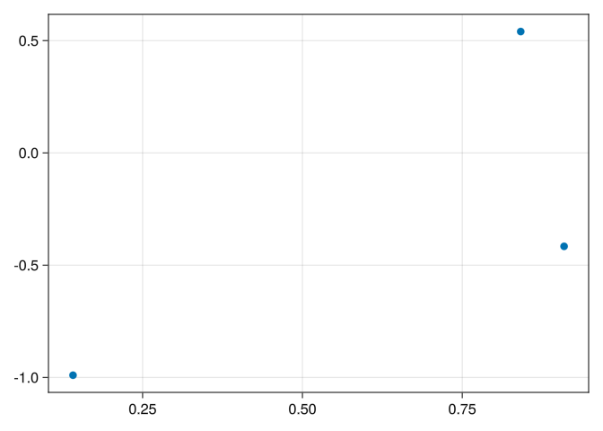
where splatting is used to specify the xs, ys, and zs to scatter.
(Compare to scatter(Point3.(r.(ts))) or scatter(Point3∘r).(ts)).)
A point is drawn with a “marker” with a certain size and color. These attributes can be adjusted, as in the following:
scatter(xs, ys;
marker=[:x,:cross, :circle], markersize=25,
color=:blue)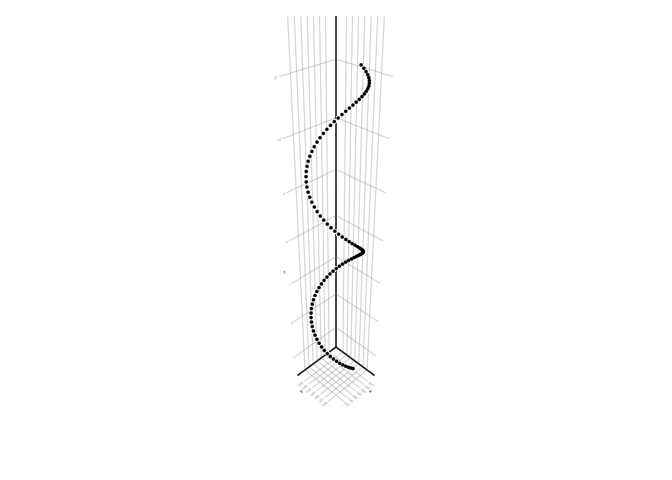
Marker attributes include
marker a symbol, shape.marker_offset offset coordinatesmarkersize size (radius pixels) of markerA single value will be repeated. A vector of values of a matching size will specify the attribute on a per point basis.
The curves of calculus are lines. The lines command of Makie will render a curve by connecting a series of points with straight-line segments. By taking a sufficient number of points the connect-the-dot figure can appear curved.
The basic plot of univariate calculus is the graph of a function \(f\) over an interval \([a,b]\). This is implemented using a familiar strategy: produce a series of representative values between \(a\) and \(b\); produce the corresponding \(f(x)\) values; plot these as points and connect the points with straight lines.
To create regular values between a and b typically the range function or the range operator (a:h:b) are employed. The the related LinRange function is also an option.
For example:
f(x) = sin(x)
a, b = 0, 2pi
xs = range(a, b, length=250)
lines(xs, f.(xs))
Makie also will read the interval notation of IntervalSets and select its own set of intermediate points:
lines(a..b, f)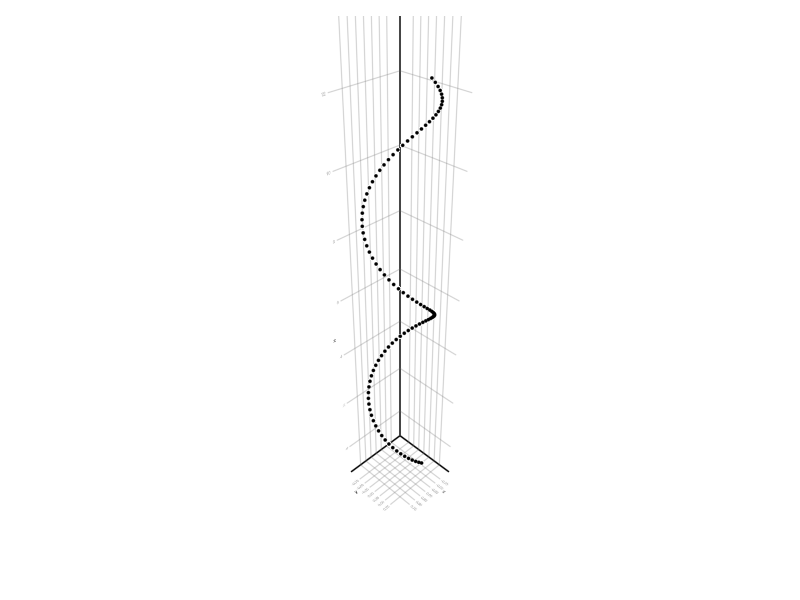
As with scatter, lines returns an object that produces a graphic when displayed.
As with scatter, lines can can also be drawn using a vector of points:
pts = [Point2(x, f(x)) for x ∈ xs]
lines(pts)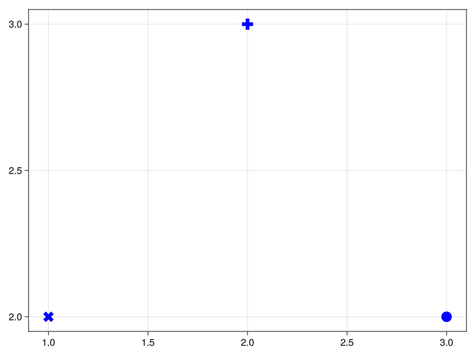
(Though the advantage isn’t clear here, this will be useful when the points are generated in different manners.)
When a y value is NaN or infinite, the connecting lines are not drawn:
xs = 1:5
ys = [1,2,NaN, 4, 5]
lines(xs, ys)
As with other plotting packages, this is useful to represent discontinuous functions, such as what occurs at a vertical asymptote or a step function.
lines!, scatter!, …)To add or modify a scene can be done using a mutating version of a plotting primitive, such as lines! or scatter!. The names follow Julia’s convention of using an ! to indicate that a function modifies an argument, in this case the underlying figure.
Here is one way to show two plots at once:
xs = range(0, 2pi, length=100)
lines(xs, sin.(xs))
lines!(xs, cos.(xs))
current_figure()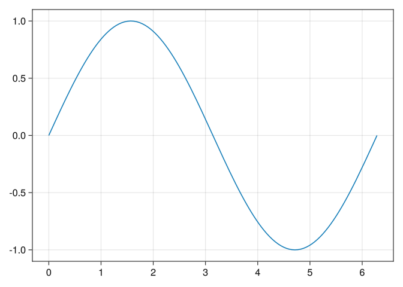
The current_figure call is needed to have the figure display, as the returned value of lines! is not a figure object. (Figure objects display when shown as the output of a cell.)
We will see soon how to modify the line attributes so that the curves can be distinguished.
The following shows the construction details in the graphic:
xs = range(0, 2pi, length=10)
lines(xs, sin.(xs))
scatter!(xs, sin.(xs);
markersize=10)
current_figure()
As an example, this shows how to add the tangent line to a graph. The slope of the tangent line being computed by ForwardDiff.derivative.
import ForwardDiff
f(x) = x^x
a, b= 0, 2
c = 0.5
xs = range(a, b, length=200)
tl(x) = f(c) + ForwardDiff.derivative(f, c) * (x-c)
lines(xs, f.(xs))
lines!(xs, tl.(xs), color=:blue)
current_figure()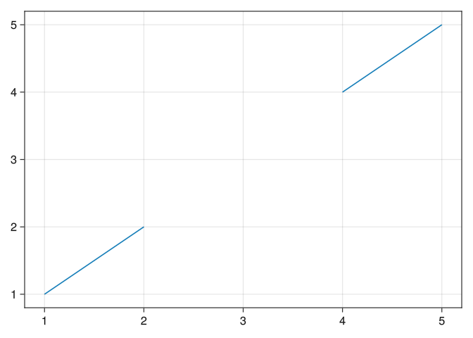
This example, modified from a discourse post by user @rafael.guerra, shows how to plot a step function (floor) using NaNs to create line breaks. The marker colors set for scatter! use :white to match the background color.
x = -5:5
δ = 5eps() # for rounding purposes; our interval is [i,i+1) ≈ [i, i+1-δ]
xx = Float64[]
for i ∈ x[1:end-1]
append!(xx, (i, i+1 - δ, NaN))
end
yy = floor.(xx)
lines(xx, yy)
scatter!(xx, yy, color=repeat([:black, :white, :white], length(xx)÷3))
current_figure()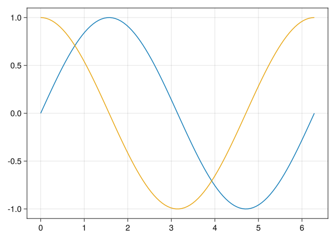
annotations)Text can be placed at a point, as a marker is. To place text, the desired text and a position need to be specified along with any adjustments to the default attributes.
For example:
xs = 1:5
pts = Point2.(xs, xs)
scatter(pts)
annotations!("Point " .* string.(xs), pts;
textsize = 50 .- 2*xs,
rotation = 2pi ./ xs)
current_figure()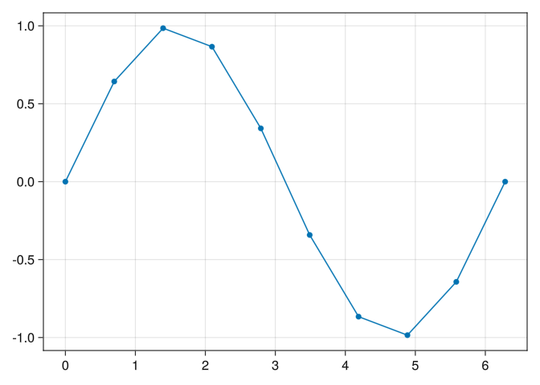
The graphic shows that textsize adjusts the displayed size and rotation adjusts the orientation. (The graphic also shows a need to manually override the limits of the y axis, as the Point 5 is chopped off; the ylims! function to do so will be shown later.)
Attributes for text, among many others, include:
align Specify the text alignment through (:pos, :pos), where :pos can be :left, :center, or :right.rotation to indicate how the text is to be rotatedtextsize the font point size for the textfont to indicate the desired fontIn a previous example, we added the argument color=:blue to the lines! call. This was to set an attribute for the line being drawn. Lines have other attributes that allow different ones to be distinguished, as above where colors indicate the different graphs.
Other attributes can be seen from the help page for lines, and include:
color set with a symbol, as above, or a stringlabel a label for the line to display in a legendlinestyle available styles are set by a symbol, one of :dash, :dot, :dashdot, or :dashdotdot.linewidth width of linetransparency the alpha value, a number between \(0\) and \(1\), smaller numbers for more transparent.A simple legend displaying labels given to each curve can be produced by axislegend. For example:
xs = 0..pi
lines(xs, x -> sin(x^2), label="sin(x^2)")
lines!(xs, x -> sin(x)^2, label = "sin(x)^2")
axislegend()
current_figure()
Later, we will see how to control the placement of a legend within a figure.
The basic plots we have seen are of type FigureAxisPlot. The “axis” part controls attributes of the plot such as titles, labels, tick positions, etc. These values can be set in different manners. On construction we can pass values to a named argument axis using a named tuple.
For example:
xs = 0..2pi
lines(xs, sin;
axis=(title="Plot of sin(x)", xlabel="x", ylabel="sin(x)")
)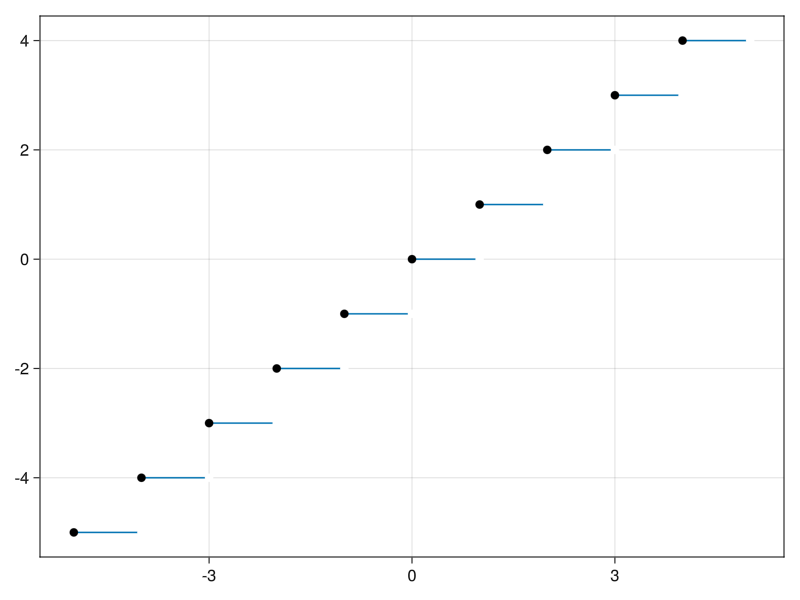
To access the axis element of a plot after the plot is constructed, values can be assigned to the axis property of the FigureAxisPlot object. For example:
xs = 0..2pi
p = lines(xs, sin;
axis=(title="Plot of sin(x)", xlabel="x", ylabel="sin(x)")
)
p.axis.xticks = MultiplesTicks(5, pi, "π") # label 5 times using `pi`
current_figure()
The ticks are most easily set as a collection of values. Above, the MultiplesTicks function was used to label with multiples of \(\pi\).
Later we will discuss how Makie allows for subsequent modification of several parts of the plot (not just the ticks) including the data.
As just mentioned, the basic plots we have seen are of type FigureAxisPlot. The “figure” part can be used to adjust the background color or the resolution. As with attributes for the axis, these too can be passed to a simple constructor:
lines(xs, sin;
axis=(title="Plot of sin(x)", xlabel="x", ylabel="sin(x)"),
figure=(;resolution=(300, 300))
)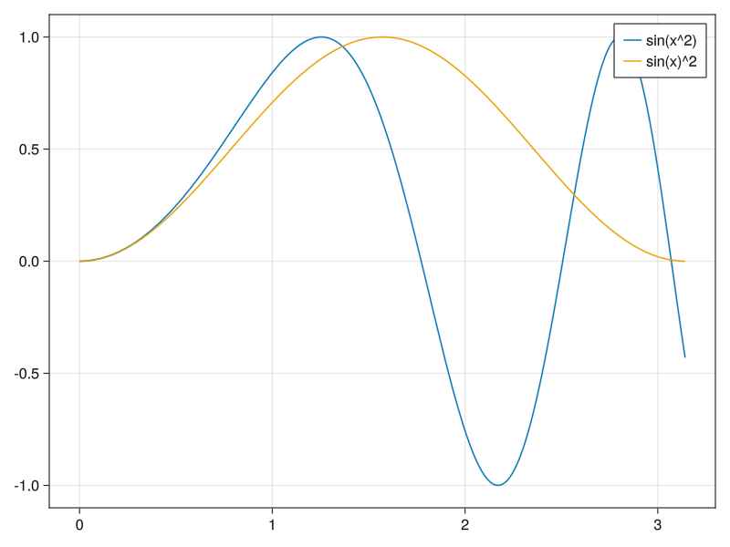
The ; in the tuple passed to figure is one way to create a named tuple with a single element. Alternatively, (resolution=(300,300), ) – with a trailing comma – could have been used.
To set the limits of the graph there are shorthand functions xlims!, ylims!, and zlims!. This might prove useful if vertical asymptotes are encountered, as in this example:
f(x) = 1/x
a,b = -1, 1
xs = range(-1, 1, length=200)
lines(xs, f.(xs))
ylims!(-10, 10)
current_figure()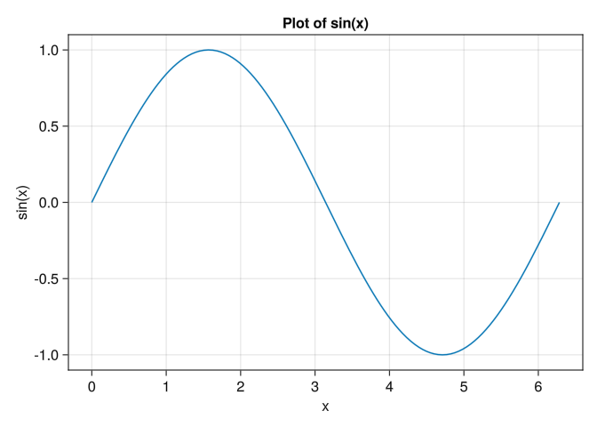
This still leaves the artifact due to the vertical asymptote at \(0\) having different values from the left and the right.
A space curve is a plot of a function \(f:R^2 \rightarrow R\) or \(f:R^3 \rightarrow R\).
To construct a curve from a set of points, we have a similar pattern in both \(2\) and \(3\) dimensions:
r(t) = [sin(2t), cos(3t)]
ts = range(0, 2pi, length=200)
pts = Point2.(r.(ts)) # or (Point2∘r).(ts)
lines(pts)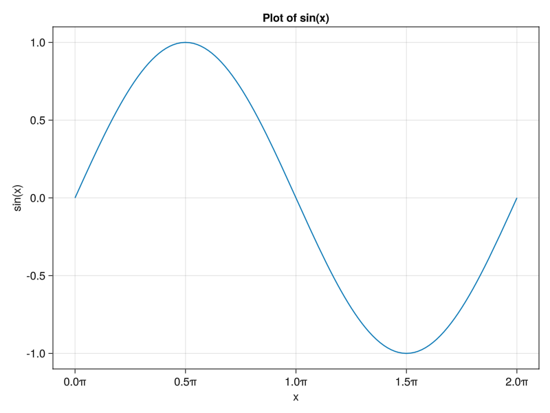
Or
r(t) = [sin(2t), cos(3t), t]
ts = range(0, 2pi, length=200)
pts = Point3.(r.(ts))
lines(pts)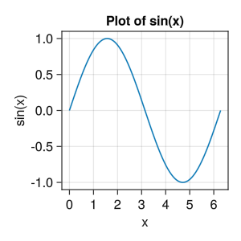
Alternatively, vectors of the \(x\), \(y\), and \(z\) components can be produced and then plotted using the pattern lines(xs, ys) or lines(xs, ys, zs). For example, using unzip, as above, we might have done the prior example with:
xs, ys, zs = unzip(r.(ts))
lines(xs, ys, zs)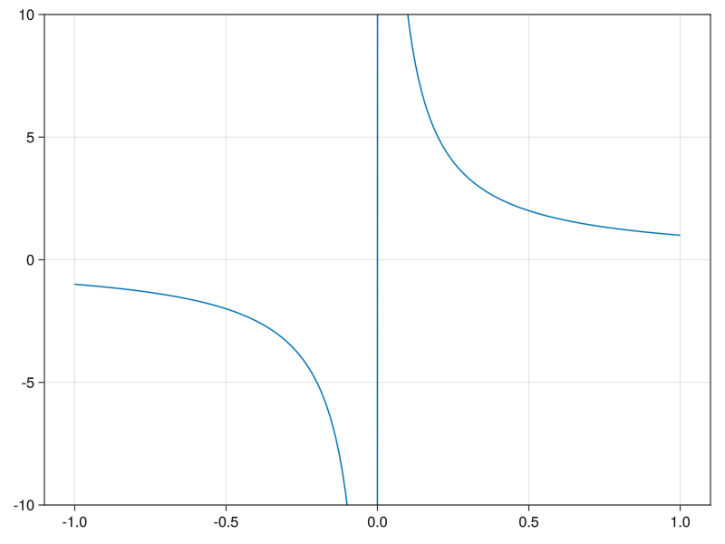
A simple plot of a parametrically defined circle will show an ellipse, as the aspect ratio of the \(x\) and \(y\) axis is not \(1\). To enforce this, we can pass a value of aspect=1 to the underlying “Axis” object. For example:
ts = range(0, 2pi, length=100)
xs, ys = sin.(ts), cos.(ts)
lines(xs, ys; axis=(; aspect = 1))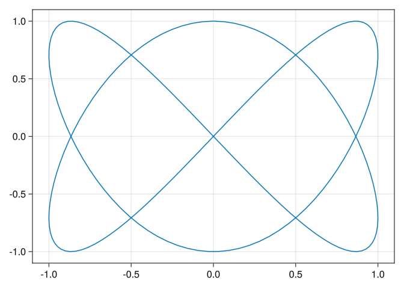
arrows)A tangent vector along a curve can be drawn quite easily using the arrows function. There are different interfaces for arrows, but we show the one which uses a vector of positions and a vector of “vectors”. For the latter, we utilize the derivative function from ForwardDiff:
r(t) = [sin(t), cos(t)] # vector, not tuple
ts = range(0, 4pi, length=200)
lines(Point2.(r.(ts)))
nts = 0:pi/4:2pi
us = r.(nts)
dus = ForwardDiff.derivative.(r, nts)
arrows!(Point2.(us), Point2.(dus))
current_figure()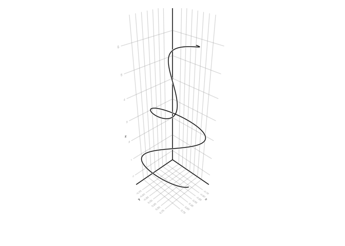
In 3 dimensions the differences are minor:
r(t) = [sin(t), cos(t), t] # vector, not tuple
ts = range(0, 4pi, length=200)
lines(Point3.(r.(ts)))
nts = 0:pi/2:(4pi-pi/2)
us = r.(nts)
dus = ForwardDiff.derivative.(r, nts)
arrows!(Point3.(us), Point3.(dus))
current_figure()
Attributes for arrows include
arrowsize to adjust the sizelengthscale to scale the sizearrowcolor to set the colorarrowhead to adjust the headarrowtail to adjust the tailPlots of surfaces in \(3\) dimensions are useful to help understand the behavior of multivariate functions.
The “peaks” function defined below has a few prominent peaks:
function peaks(x, y)
p = 3*(1-x)^2*exp(-x^2 - (y+1)^2)
p -= 10(x/5-x^3-y^5)*exp(-x^2-y^2)
p -= 1/3*exp(-(x+1)^2-y^2)
p
endpeaks (generic function with 1 method)Here we see how peaks can be visualized over the region \([-5,5]\times[-5,5]\):
xs = ys = range(-5, 5, length=25)
surface(xs, ys, peaks)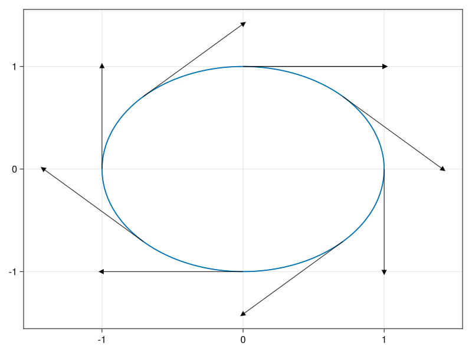
The calling pattern surface(xs, ys, f) implies a rectangular grid over the \(x\)-\(y\) plane defined by xs and ys with \(z\) values given by \(f(x,y)\).
Alternatively a “matrix” of \(z\) values can be specified. For a function f, this is conveniently generated by the pattern f.(xs, ys'), the ' being important to get a matrix of all \(x\)-\(y\) pairs through Julia’s broadcasting syntax.
zs = peaks.(xs, ys')
surface(xs, ys, zs)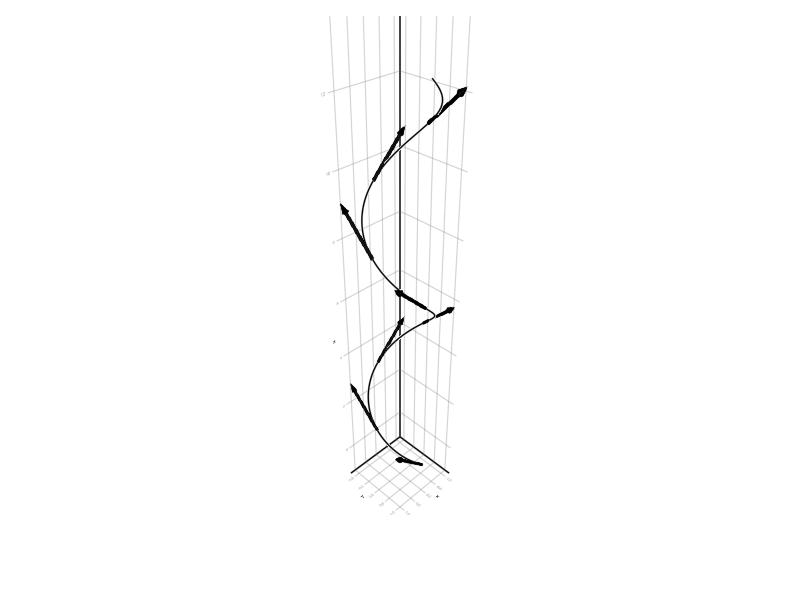
To see how this graph is constructed, the points \((x,y,f(x,y))\) are plotted over the grid and displayed.
Here we downsample to illustrate:
xs = ys = range(-5, 5, length=5)
pts = [Point3(x, y, peaks(x,y)) for x in xs for y in ys]
scatter(pts, markersize=25)
These points are then connected. The wireframe function illustrates just the frame:
wireframe(xs, ys, peaks.(xs, ys'); linewidth=5)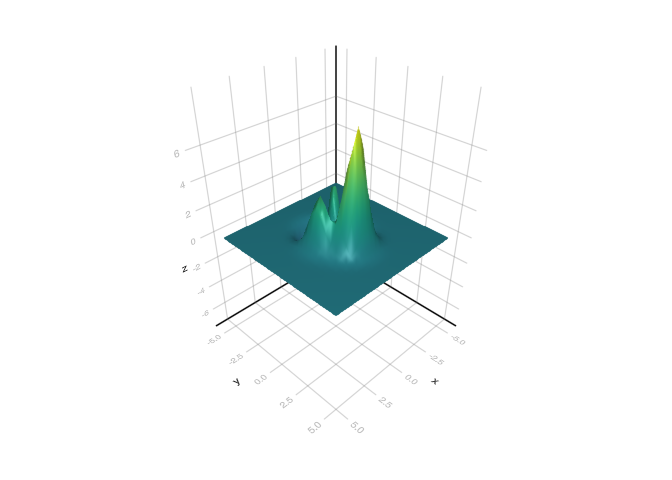
The surface call triangulates the frame and fills in the shading:
surface!(xs, ys, peaks.(xs, ys'))
current_figure()
A surface may be parametrically defined through a function \(r(u,v) = (x(u,v), y(u,v), z(u,v))\). For example, the surface generated by \(z=f(x,y)\) is of the form with \(r(u,v) = (u,v,f(u,v))\).
The surface function and the wireframe function can be used to display such surfaces. In previous usages, the x and y values were vectors from which a 2-dimensional grid is formed. For parametric surfaces, a grid for the x and y values must be generated. This function will do so:
function parametric_grid(us, vs, r)
n,m = length(us), length(vs)
xs, ys, zs = zeros(n,m), zeros(n,m), zeros(n,m)
for (i, uᵢ) in pairs(us)
for (j, vⱼ) in pairs(vs)
x,y,z = r(uᵢ, vⱼ)
xs[i,j] = x
ys[i,j] = y
zs[i,j] = z
end
end
(xs, ys, zs)
endparametric_grid (generic function with 1 method)With the data suitably massaged, we can directly plot either a surface or wireframe plot.
As an aside, The above can be done more campactly with nested list comprehensions:
xs, ys, zs = [[pt[i] for pt in r.(us, vs')] for i in 1:3]Or using the unzip function directly after broadcasting:
xs, ys, zs = unzip(r.(us, vs'))For example, a sphere can be parameterized by \(r(u,v) = (\sin(u)\cos(v), \sin(u)\sin(v), \cos(u))\) and visualized through:
r(u,v) = [sin(u)*cos(v), sin(u)*sin(v), cos(u)]
us = range(0, pi, length=25)
vs = range(0, pi/2, length=25)
xs, ys, zs = parametric_grid(us, vs, r)
surface(xs, ys, zs)
wireframe!(xs, ys, zs)
current_figure()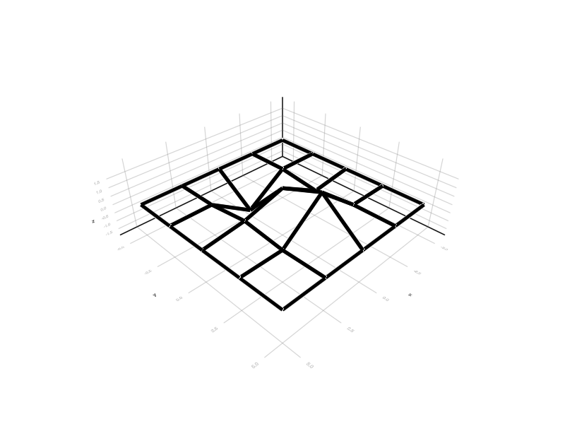
A surface of revolution for \(g(u)\) revolved about the \(z\) axis can be visualized through:
g(u) = u^2 * exp(-u)
r(u,v) = (g(u)*sin(v), g(u)*cos(v), u)
us = range(0, 3, length=10)
vs = range(0, 2pi, length=10)
xs, ys, zs = parametric_grid(us, vs, r)
surface(xs, ys, zs)
wireframe!(xs, ys, zs)
current_figure()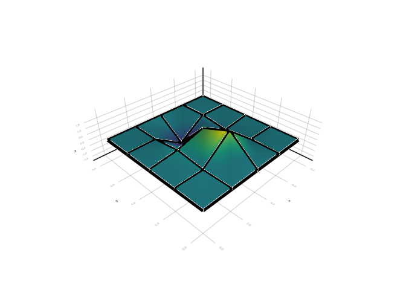
A torus with big radius \(2\) and inner radius \(1/2\) can be visualized as follows
r1, r2 = 2, 1/2
r(u,v) = ((r1 + r2*cos(v))*cos(u), (r1 + r2*cos(v))*sin(u), r2*sin(v))
us = vs = range(0, 2pi, length=25)
xs, ys, zs = parametric_grid(us, vs, r)
surface(xs, ys, zs)
wireframe!(xs, ys, zs)
current_figure()
A Möbius strip can be produced with:
ws = range(-1/4, 1/4, length=8)
thetas = range(0, 2pi, length=30)
r(w, θ) = ((1+w*cos(θ/2))*cos(θ), (1+w*cos(θ/2))*sin(θ), w*sin(θ/2))
xs, ys, zs = parametric_grid(ws, thetas, r)
surface(xs, ys, zs)
wireframe!(xs, ys, zs)
current_figure()
contour, contourf, heatmap)For a function \(z = f(x,y)\) an alternative to a surface plot, is a contour plot. That is, for different values of \(c\) the level curves \(f(x,y)=c\) are drawn.
For a function \(f(x,y)\), the syntax for generating a contour plot follows that for surface.
For example, using the peaks function, previously defined, we have a contour plot over the region \([-5,5]\times[-5,5]\) is generated through:
xs = ys = range(-5, 5, length=100)
contour(xs, ys, peaks)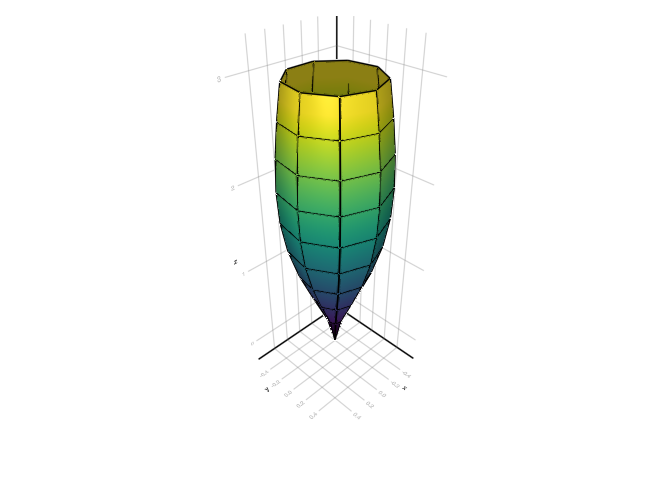
The default of \(5\) levels can be adjusted using the levels keyword:
contour(xs, ys, peaks; levels = 20)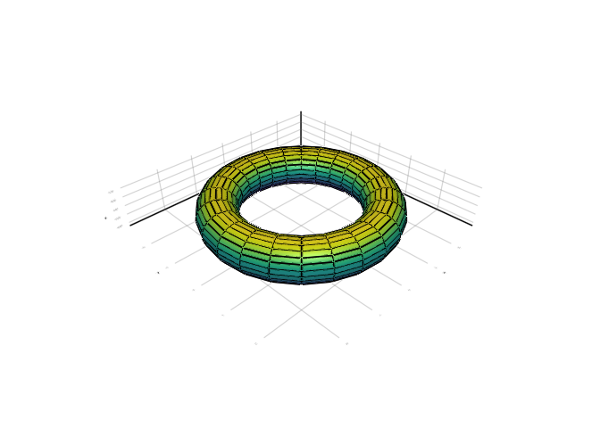
The levels argument can also specify precisely what levels are to be drawn.
The contour graph makes identification of peaks and valleys easy as the limits of patterns of nested contour lines.
A filled contour plot is produced by contourf:
contourf(xs, ys, peaks)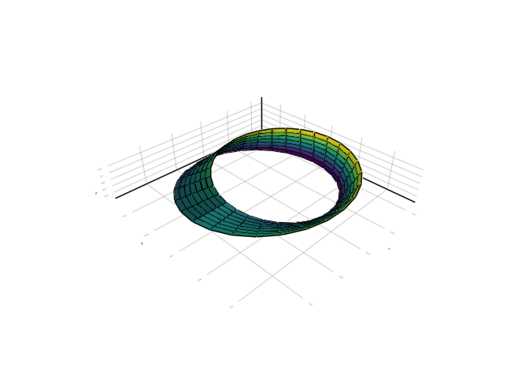
A related, but alternative visualization, using color to represent magnitude is a heatmap, produced by the heatmap function. The calling syntax is similar to contour and surface:
heatmap(xs, ys, peaks)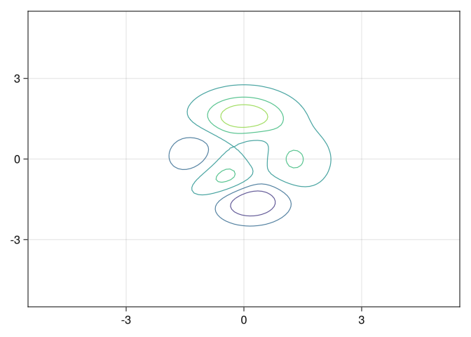
This graph shows peaks and valleys through “hotspots” on the graph.
The MakieGallery package includes an example of a surface plot with both a wireframe and 2D contour graph added. It is replicated here using the peaks function scaled by \(5\).
The function and domain to plot are described by:
xs = ys = range(-5, 5, length=51)
zs = peaks.(xs, ys') / 5;The zs were generated, as wireframe does not provide the interface for passing a function.
The surface and wireframe are produced as follows. Here we manually create the figure and axis object so that we can set the viewing angle through the elevation argument to the axis object:
fig = Figure()
ax3 = Axis3(fig[1,1];
elevation=pi/9, azimuth=pi/16)
surface!(ax3, xs, ys, zs)
wireframe!(ax3, xs, ys, zs;
overdraw = true, transparency = true,
color = (:black, 0.1))
current_figure()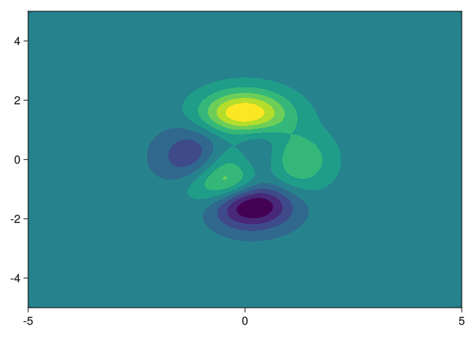
To add the contour, a simple call via contour!(scene, xs, ys, zs) will place the contour at the \(z=0\) level which will make it hard to read. Rather, placing at the “bottom” of the figure is desirable. To identify that the minimum value, is identified (and rounded) and the argument transformation = (:xy, zmin) is passed to contour!:
ezs = extrema(zs)
zmin, zmax = floor(first(ezs)), ceil(last(ezs))
contour!(ax3, xs, ys, zs;
levels = 15, linewidth = 2,
transformation = (:xy, zmin))
zlims!(zmin, zmax)
current_figure()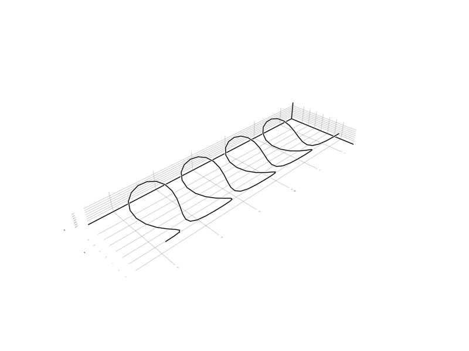
The transformation plot attribute sets the “plane” (one of :xy, :yz, or :xz) at a location, in this example zmin.
The manual construction of a figure and an axis object will be further discussed later.
The contour function can also plot \(3\)-dimensional contour plots. Concentric spheres, contours of \(x^2 + y^2 + z^2 = c\) for \(c > 0\) are presented by the following:
f(x,y,z) = x^2 + y^2 + z^2
xs = ys = zs = range(-3, 3, length=100)
contour(xs, ys, zs, f)Suppose \(f\) is a scalar-valued function. If f takes two variables for its input, then the equation \(f(x,y) = 0\) implicitly defines \(y\) as a function of \(x\); \(y\) can be visualized locally with a curve. If \(f\) takes three variables for its input, then the equation \(f(x,y,z)=0\) implicitly defines \(z\) as a function of \(x\) and \(y\); \(z\) can be visualized locally with a surface.
The graph of an equation is the collection of all \((x,y)\) values satisfying the equation. This is more general than the graph of a function, which can be viewed as the graph of the equation \(y=f(x)\). An equation in \(x\)-\(y\) can be graphed if the set of solutions to a related equation \(f(x,y)=0\) can be identified, as one can move all terms to one side of an equation and define \(f\) as the rule of the side with the terms. The implicit function theorem ensures that under some conditions, locally near a point \((x, y)\), the value \(y\) can be represented as a function of \(x\). So, the graph of the equation \(f(x,y)=0\) can be produced by stitching together these local function representations.
The contour graph can produce these graphs by setting the levels argument to [0].
f(x,y) = x^3 + x^2 + x + 1 - x*y # solve x^3 + x^2 + x + 1 = x*y
xs = range(-5, 5, length=100)
ys = range(-10, 10, length=100)
contour(xs, ys, f.(xs, ys'); levels=[0])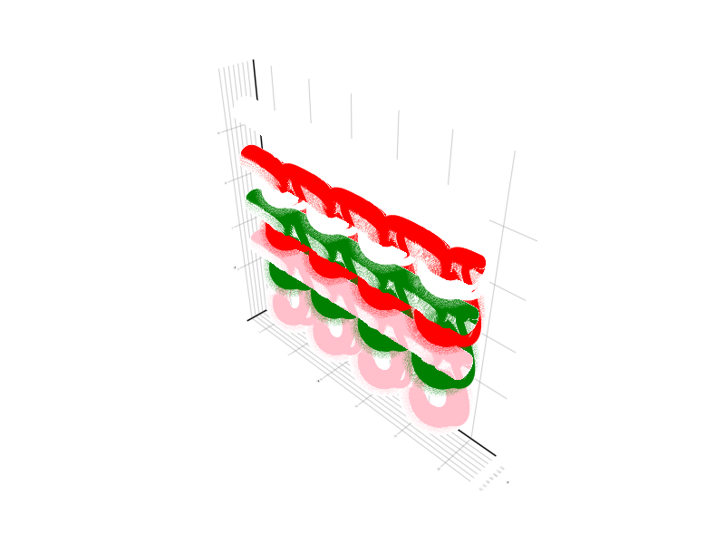
The implicitPlots.jl function uses the Contour package along with a Plots recipe to plot such graphs. Here we see how to use Makie in a similar manner:
import Contour
function implicit_plot(xs, ys, f; kwargs...)
fig = Figure()
ax = Axis(fig[1,1])
implicit_plot!(ax, xs, ys, f; kwargs...)
fig
end
function implicit_plot!(ax, xs, ys, f; kwargs...)
z = [f(x, y) for x in xs, y in ys]
cs = Contour.contour(collect(xs), collect(ys), z, 0.0)
ls = Contour.lines(cs)
isempty(ls) && error("empty")
for l ∈ ls
us, vs = Contour.coordinates(l)
lines!(ax, us, vs; kwargs...)
end
endTo plot the equation \(F(x,y,z)=0\), for \(F\) a scalar-valued function, again the implicit function theorem says that, under conditions, near any solution \((x,y,z)\), \(z\) can be represented as a function of \(x\) and \(y\), so the graph will look likes surfaces stitched together. The Implicit3DPlotting package takes an approach like ImplicitPlots to represent these surfaces. It replaces the Contour package computation with a \(3\)-dimensional alternative provided through the Meshing and GeometryBasics packages.
The Implicit3DPlotting package needs some maintenance, so we borrow the main functionality and wrap it into a function:
import Meshing
import GeometryBasics
function make_mesh(xlims, ylims, zlims, f,
M = Meshing.MarchingCubes(); # or Meshing.MarchingTetrahedra()
samples=(35, 35, 35),
)
lims = extrema.((xlims, ylims, zlims))
Δ = xs -> last(xs) - first(xs)
xs = Vec(first.(lims))
Δxs = Vec(Δ.(lims))
GeometryBasics.Mesh(f, Rect(xs, Δxs), M; samples = samples)
endmake_mesh (generic function with 2 methods)The make_mesh function creates a mesh that can be visualized with the wireframe or mesh plotting functions.
This example, plotting an implicitly defined sphere, comes from the documentation of Implicit3DPlotting. The f in make_mesh is a scalar-valued function of a vector:
f(x) = sum(x.^2) - 1
xs = ys = zs = (-5, 5)
m = make_mesh(xs, ys, zs, f)
wireframe(m)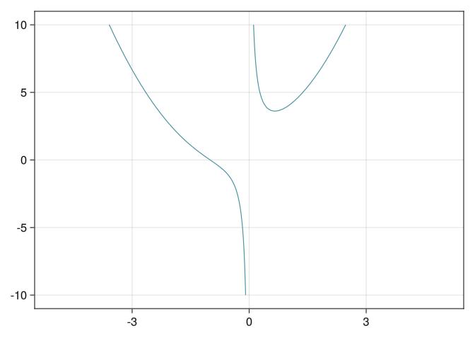
Here we visualize an intersection of a sphere with another figure:
r₂(x) = sum(x.^2) - 5/4 # a sphere
r₄(x) = sum(x.^4) - 1
xs = ys = zs = -2:2
m2,m4 = make_mesh(xs, ys, zs, r₂), make_mesh(xs, ys, zs, r₄)
wireframe(m4, color=:yellow)
wireframe!(m2, color=:red)
current_figure()
This example comes from Wikipedia showing an implicit surface of genus \(2\):
f(x,y,z) = 2y*(y^2 -3x^2)*(1-z^2) + (x^2 +y^2)^2 - (9z^2-1)*(1-z^2)
zs = ys = xs = range(-5/2, 5/2, length=100)
m = make_mesh(xs, ys, zs, x -> f(x...))
wireframe(m)
(This figure does not render well through contour(xs, ys, zs, f, levels=[0]), as the hole is not shown.)
For one last example from Wikipedia, we have the Cassini oval which “can be defined as the point set for which the product of the distances to \(n\) given points is constant.” That is:
function cassini(λ, ps = ((1,0,0), (-1, 0, 0)))
n = length(ps)
x -> prod(norm(x .- p) for p ∈ ps) - λ^n
end
xs = ys = zs = range(-2, 2, length=100)
m = make_mesh(xs, ys, zs, cassini(1.05))
wireframe(m)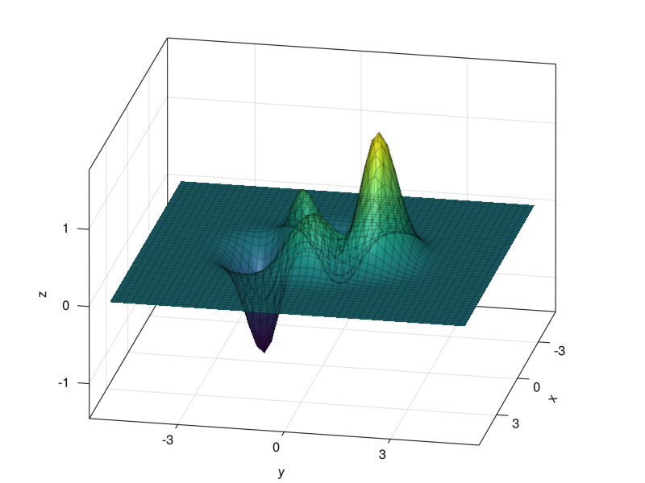
The vector field \(f(x,y) = \langle y, -x \rangle\) can be visualized as a set of vectors, \(f(x,y)\), positioned at a grid. These arrows can be visualized with the arrows function. The arrows function is passed a vector of points for the anchors and a vector of points representing the vectors.
We can generate these on a regular grid through:
f(x, y) = [y, -x]
xs = ys = -5:5
pts = vec(Point2.(xs, ys'))
dus = vec(Point2.(f.(xs, ys')));
first(pts), first(dus) # show an example([-5, -5], [-5, 5])Broadcasting over (xs, ys') ensures each pair of possible values is encountered. The vec call reshapes an array into a vector.
Calling arrows on the prepared data produces the graphic:
arrows(pts, dus)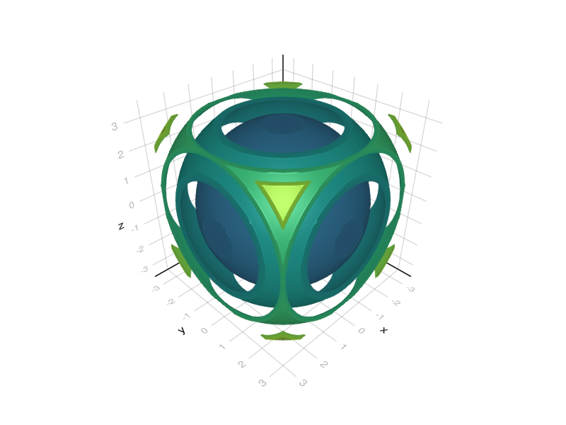
The grid seems rotated at first glance; but is also confusing. This is due to the length of the vectors as the \((x,y)\) values get farther from the origin. Plotting the normalized values (each will have length \(1\)) can be done easily using norm (which is found in the standard LinearAlgebra library):
dvs = dus ./ norm.(dus)
arrows(pts, dvs)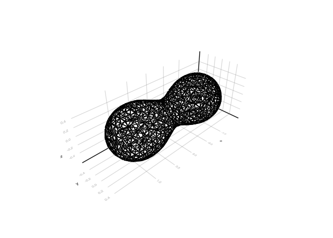
The rotational pattern becomes much clearer now.
The streamplot function also illustrates this phenomenon. This implements an “algorithm [that] puts an arrow somewhere and extends the streamline in both directions from there. Then, it chooses a new position (from the remaining ones), repeating the the exercise until the streamline gets blocked, from which on a new starting point, the process repeats.”
The streamplot function expects a Point not a pair of values, so we adjust f slightly and call the function using the pattern streamplot(g, xs, ys):
f(x, y) = [y, -x]
g(xs) = Point2(f(xs...))
streamplot(g, -5..5, -5..5)
(We used interval notation to set the viewing range, a range could also be used.)
The calling pattern of streamplot is different than other functions, such as surface, in that the function comes first.
Makie makes it really easy to piece together figures from individual plots. To illustrate, we create a graphic consisting of a plot of a function, its derivative, and its second derivative. In our graphic, we also leave space for a label.
The Layout Tutorial has much more detail on this subject.
The basic plotting commands, like lines, return a FigureAxisPlot object. For laying out our own graphic, we manage the figure and axes manually. The commands below create a figure, then assign axes to portions of the figure:
F = Figure()
af = F[2,1:2] = Axis(F)
afp = F[3,1:end] = Axis(F)
afpp = F[4,:] = Axis(F)Axis with 1 plots:
┗━ Mesh{Tuple{GeometryBasics.Mesh{3, Float32, GeometryBasics.TriangleP{3, Float32, GeometryBasics.PointMeta{3, Float32, Point{3, Float32}, (:normals,), Tuple{Vec{3, Float32}}}}, GeometryBasics.FaceView{GeometryBasics.TriangleP{3, Float32, GeometryBasics.PointMeta{3, Float32, Point{3, Float32}, (:normals,), Tuple{Vec{3, Float32}}}}, GeometryBasics.PointMeta{3, Float32, Point{3, Float32}, (:normals,), Tuple{Vec{3, Float32}}}, GeometryBasics.NgonFace{3, GeometryBasics.OffsetInteger{-1, UInt32}}, StructArrays.StructVector{GeometryBasics.PointMeta{3, Float32, Point{3, Float32}, (:normals,), Tuple{Vec{3, Float32}}}, NamedTuple{(:position, :normals), Tuple{Vector{Point{3, Float32}}, Vector{Vec{3, Float32}}}}, Int64}, Vector{GeometryBasics.NgonFace{3, GeometryBasics.OffsetInteger{-1, UInt32}}}}}}}The axes are named af, afp and afpp, as they will hold the respective graphs. The key here is the use of matrix notation to layout the graphic in a grid. The first one is row 2 and columns 1 through 2; the second row 3 and again all columns, the third is row 4 and all columns.
In this figure, we want the \(x\)-axis for each of the three graphics to be linked. This command ensures that:
linkxaxes!(af, afp, afpp);By linking axes, if one is updated, say through xlims!, the others will be as well.
We now plot our functions. The key here is the mutating form of lines! takes an axis object to mutate as its first argument:
f(x) = 8x^4 - 8x^2 + 1
fp(x) = 32x^3 - 16x
fpp(x) = 96x^2 - 16
xs = -1..1
lines!(af, xs, f)
lines!(afp, xs, fp)
lines!(afp, xs, zero, color=:blue)
lines!(afpp, xs, fpp)
lines!(afpp, xs, zero, color=:blue);We can give title information to each axis:
af.title = "f"
afp.title = "fp"
afpp.title = "fpp";Finally, we add a label in the first row, but for illustration purposes, only use the first column.
Label(F[1,1], """
Plots of f and its first and second derivatives.
When the first derivative is zero, the function
f has relative extrema. When the second derivative
is zero, the function f has an inflection point.
""");Finally we display the figure:
F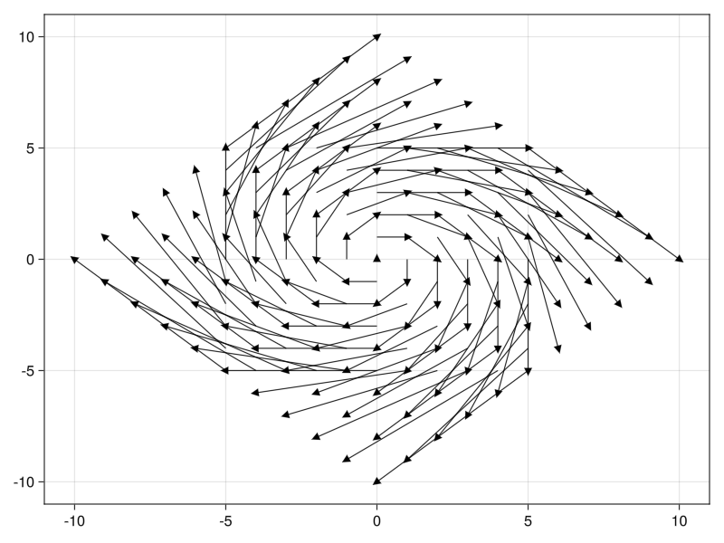
The basic components of a plot in Makie can be updated interactively. Makie uses the Observables package which allows complicated interactions to be modeled quite naturally. In the following we give a simple example.
In Makie, an Observable is a structure that allows its value to be updated, similar to an array. When changed, observables can trigger an event. Observables can rely on other observables, so events can be cascaded.
This simple example shows how an observable h can be used to create a collection of points representing a secant line. The figure shows the value for h=3/2.
f(x) = sqrt(x)
c = 1
xs = 0..3
h = Observable(3/2)
points = lift(h) do h
xs = [0,c,c+h,3]
tl = x -> f(c) + (f(c+h)-f(c))/h * (x-c)
[Point2(x, tl(x)) for x ∈ xs]
end
lines(xs, f)
lines!(points)
current_figure()
We can update the value of h using setindex! notation (square brackets). For example, to see that the secant line is a good approximation to the tangent line as \(h \rightarrow 0\) we can set h to be 1/4 and replot:
h[] = 1/4
current_figure()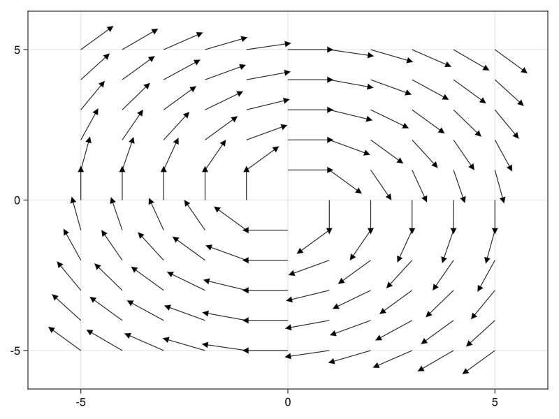
The line h[] = 1/4 updated h which then updated points (a points is lifted up from h) which updated the graphic. (In these notes, we replot to see the change, but in an interactive session, the current displayed figure would be updated; no replotting would be necessary.)
Finally, this example shows how to add a slider to adjust the value of h with a mouse. The slider object is positioned along with a label using the grid reference, as before.
f(x) = sqrt(x)
c = 1
xs = 0..3
F = Figure()
ax = Axis(F[1,1:2])
h = Slider(F[2,2], range = 0.01:0.01:1.5, startvalue = 1.5)
Label(F[2,1], "Adjust slider to change `h`";
justification = :left)
points = lift(h.value) do h
xs = [0,c,c+h,3]
tl = x-> f(c) + (f(c+h)-f(c))/h * (x-c)
[Point2(x, tl(x)) for x ∈ xs]
end
lines!(ax, xs, f)
lines!(ax, points)
current_figure()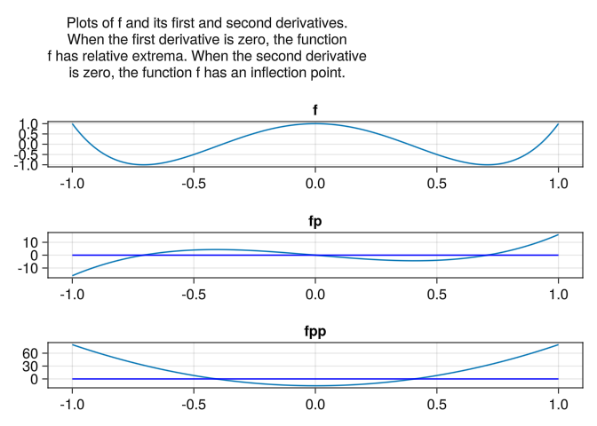
The slider value is “lifted” by its value component, as shown. Otherwise, the above is fairly similar to just using an observable for h.